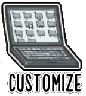
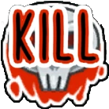
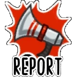
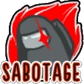
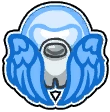
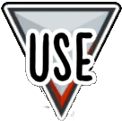
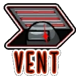
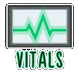

Abilities
Abilities are a game mechanic in Among Us that allow players to interact with the map and view information about other players. Some abilities are limited to certain roles, while others can be used by all players.
Overview
Abilities appear as large buttons in the bottom-right corner of players' screens, each with different purposes. By default, all players have access to the Use and Report buttons. Standing near security systems such as Admin replaces the Use ability with the security system's appropriate ability. Similar to assigned tasks which have yellow outlines, certain abilities such as Admin, Security, Doorlog, Vitals and Customize have white outlines to them, while Vent and Kill (which only appear when getting close to the interactive object or player) have red outlines.
Use is positioned to the bottom right of the screen, and it becomes available whenever the player stands near an object they can interact with. Report is positioned to the left of Use, and it becomes available near a dead body. Extra roles (Scientist, Engineer, Guardian Angel, and Shapeshifter) gain access to an extra ability that is unique to them, and it is positioned to the left of Report. Impostors gain access to three extra abilities (Kill, Sabotage, and Vent) which are positioned above Use, Report, and the extra role ability.
List of Abilities
| Ability | Used by | Maps | Description |
|---|---|---|---|
| All Players |
|
Opens up the Admin map which gives the user access to where everyone is. | |
|  |
|
|
Lobby: Lets hosts customize the game settings.
Freeplay: Lets players change their task list as well as allowing them to change their role. |
| All Players |
|
Lets players check which players went through which sensors. | |
|  | Impostors (alive) |
|
Lets Impostors kill Crewmates. Only available when cooldown is not active. |
|  | All Players (alive) |
|
Lets players report dead bodies. |
|  | Impostors |
|
Lets Impostors create fatal and non-fatal problems that the Crewmates can either fix or leave alone. |
|  |
Guardian Angels (dead) |
|
Lets Guardian Angels temporarily protect players from being killed. |
| Shapeshifter (alive) |
|
Lets Shapeshifters temporarily transform into other players. | |
| All Players |
|
Lets players watch through the Security cameras scattered around the map. | |
| Hosts |
|
Lets the host start the game. | |
|  | Crewmates Impostors (alive) |
|
Lets players interact with tasks and other interactive objects. |
|  | Impostors (alive) Engineers |
|
Lets Impostors and Engineers enter nearby vents. |
|  | All Players Scientists (Portable Version) |
|
Lets players check who is dead and who is not. Scientists can open vitals anytime as long as they have battery left. |